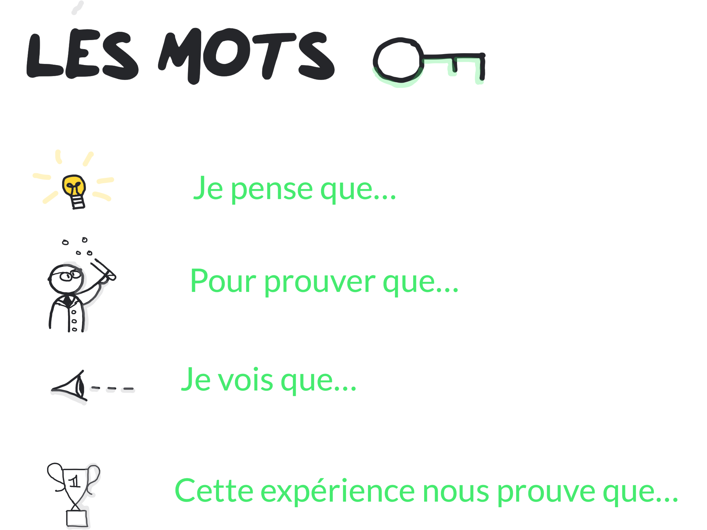

Expérience introductive
Test de l'hypothèse 1
On s'attend à revoir de la buée se déposer sur le tube à essai quand on chauffe le tube...
Cette expérience nous prouve que la buée NE vient PAS de l'humidité de l'air.
Test de l'hypothèse 2
On s'attend à revoir de la buée se déposer sur le tube à essai quand on chauffe le tube...
Cette expérience nous prouve que la buée NE vient PAS de la chaleur.
Conclusion : la buée vient du sulfate de cuivre.
Test de l'hypothèse 3
On s'attend à voir le sulfate de cuivre redevenir bleu quand il refroidit...
Cette expérience nous prouve que le sulfate de cuivre N' est PAS blanc à cause de sa température.
Test de l'hypothèse 4
On s'attend à voir le sulfate de cuivre devenir bleu au contact de la goutte d'eau...
Cette expérience nous prouve que le sulfate de cuivre est bleu quand il contient de l'eau et blanc quand il n'en contient pas.
Conclusion : le sulfate de cuivre est bleu avec de l'eau et blanc sans eau !
LE TOUT EN IMAGES

facultatif...
Une question souvent posée par les élèves...
Une observation inattendue qui pose question...
Une question souvent posée par les élèves...
Une question souvent posée par les élèves...